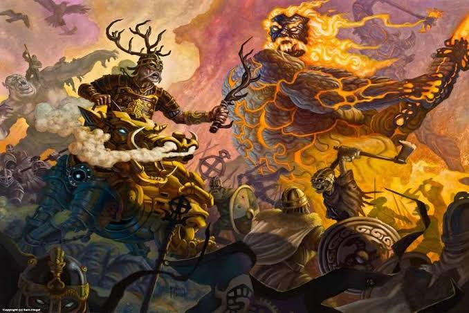
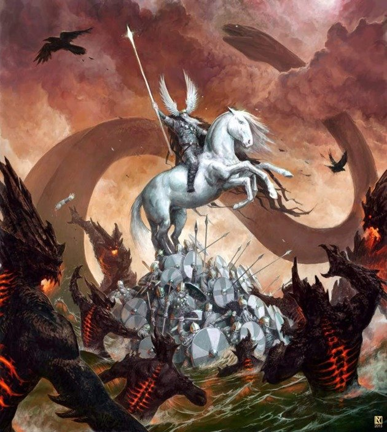
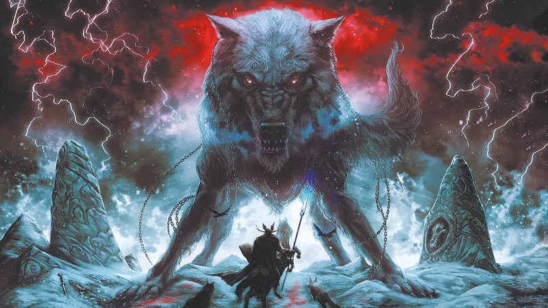

Völuspá: A Origem e O Final do Mundo
A origem e o final eventual do mundo são descritas em Völuspá[7] (“A profecia dos Völva” ou “A profecia de Sybil”), um dos poemas mais impressionantes no Edda poético. Estes versos assombrados contêm uma das mais vívidas criações em toda a história religiosa e representa a destruição do mundo, cuja originalidade está na sua atenção aos detalhes. No Völuspá, Odin, deus principal do panteão dos nórdicos, conjura do espírito de um Völva morto (Shaman ou Sybil) e requer que este espírito revele o passado e o futuro. O espírito se mostra relutante: “O que você pede de mim? Porque você me tenta?”; mas como ela se encontra morta, não mostra nenhum medo de Odin, e continuamente o pergunta, de forma grosseira: “Bem, você quer saber mais?” Mas Odin insiste: se deve cumprir sua função como o rei dos deuses, deve possuir todo o conhecimento. Uma vez que o sybil revela os segredos de passado e de futuro, cai para trás em forma de limbo: “Eu dissiparei agora”.
O Passado
No início havia somente o mundo das névoas, Niflheim e o mundo de fogo, Musphelhein, e entre eles havia o Ginungagap, “um grande vazio” no qual nada vivia. Em Ginungagap, o fogo e a névoa se encontraram formando um enorme bloco de gelo. Como o fogo de Musphelhein era muito forte e eterno, o gelo foi derretendo até surgir a forma de um gigante primordial, Ymir, que dormiu durante muitas eras. O seu suor deu origem aos primeiros gigantes. E do gelo também surgiu uma vaca gigante, Audumbla, cujo leite jorrava de suas tetas primordiais em forma de 4 grandes rios que alimentavam Ymir. A vaca lambeu o gelo e libertou o primeiro deus, Buro, que foi pai de Borr, que por sua vez foi pai do primeiro Æsir, Odin, e seus irmãos, Vili e Ve. Então, os filhos de Borr, Odin, Vili e Ve, destroçaram o corpo de Ymir e, a partir deste, criaram o mundo. De seus ossos e dentes surgiram as rochas e as montanhas e de seu cérebro surgiram as nuvens.
Os deuses regularam a passagem dos dias e noites, assim como das estações. Os primeiros seres humanos eram Ask (carvalho) e Embla (olmo), que foram esculpidos em madeira e trazidos à vida pelos deuses Odin, Honir/Vili e Lodur/Ve. Sol era a deusa do sol, filha deMundilfari e esposa de Glen. Todo dia, ela montava através do céu em sua carruagem puxada por dois cavalos nomeados Alsvid e Arvak. Esta passagem é conhecida como Alfrodul, que significa “glória dos elfos”, que se tornou um kenning comum para o sol. Sol era perseguida durante o dia por Skoll, um lobo que queria devorá-la. Os eclipses solares significavam que Skoll quase a capturava. Na mitologia, era fato que Skoll eventualmente conseguia capturar Sol e a devorava; entretanto, a mesma era substituída por sua filha. O irmão de Sol, a lua, Mani, era perseguido por Hati, um outro lobo. Na mitologia nórdica, a terra era protegida do calor do sol por Svalin, que permanecia entre a terra e a estrela. Nas crenças nórdicas, o sol não fornecia luz, que emanava da juba de Alsvid e Arvak.
A Sybil descreve a enorme árvore que sustenta os nove mundos, Yggdrasil e as três Nornas (símbolos femininos da fé inexorável, conhecidas como Urðr (Urdar), Verðandi (Verdante) e Skuld, que indicam o passado, a atualidade e futuro), as quais tecem as linhas do destino. Descreve também a guerra inicial entre o Æsir e o Vanir e o assassinato de Balder. Então, o espírito gira sua atenção ao futuro.
O Futuro
A visão antiga dos nórdicos sobre o futuro é notavelmente sombria e pálida. No final, as forças do caos serão superiores em número e força aos guardiões divinos e humanos da ordem. Loki e suas crianças monstruosas explodirão suas uniões; os mortos deixarão Niflheim para atacar a vida. Heimdall, guardião das divindades, convocará os deuses com o soar de sua trombeta de chifre. Se seguirá uma batalha final entre ordem e caos (Ragnarök), que os deuses perderão, como é seu destino. Os deuses, cientes de sua sina, recolherão os guerreiros mais finos, o Einherjar, para lutar em seu lado quando este dia vier. No entanto, no final, seus poderes serão pequenos para impedir que o mundo caia no caos onde ele se emergiu, e os deuses e seu mundo serão destruídos. Odin será engolido por Fenrir, o lobo.
Mesmo assim, ainda haverá alguns sobreviventes, humanos e divinos, que povoarão um mundo novo, para começar um novo ciclo. Ou assim Sybil nos diz; os estudiosos ainda se dividem na interpretação das últimas estrofes e deixam em dúvida se esta não foi uma adição atrasada ao mito por causa da influência cristã. Se a referência for anterior a cristianização, o mito do final dos tempos do Völuspá pode refletir uma tradição indo-europeia que se deriva dos mitos do zoroastrismo persa.